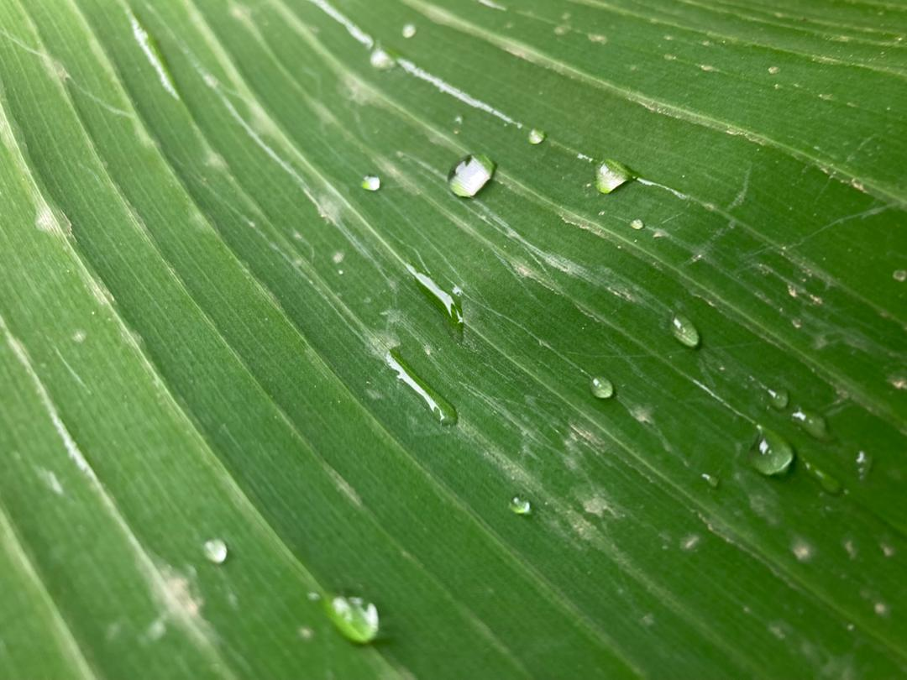
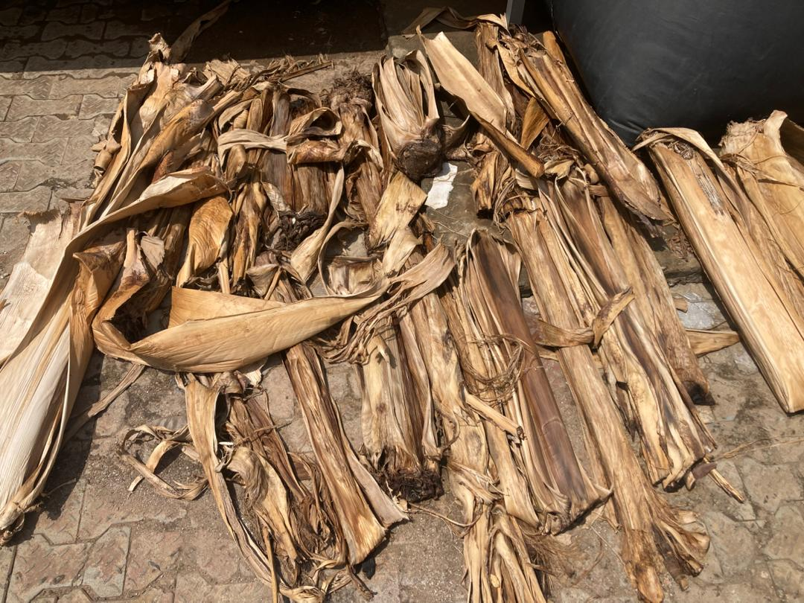
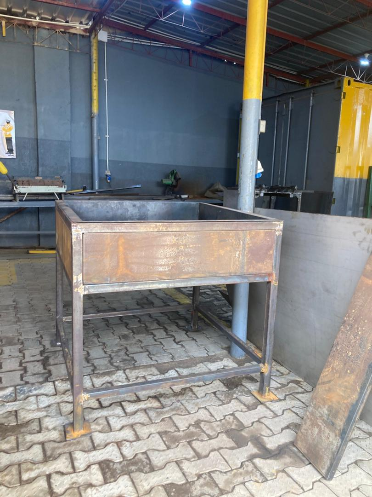
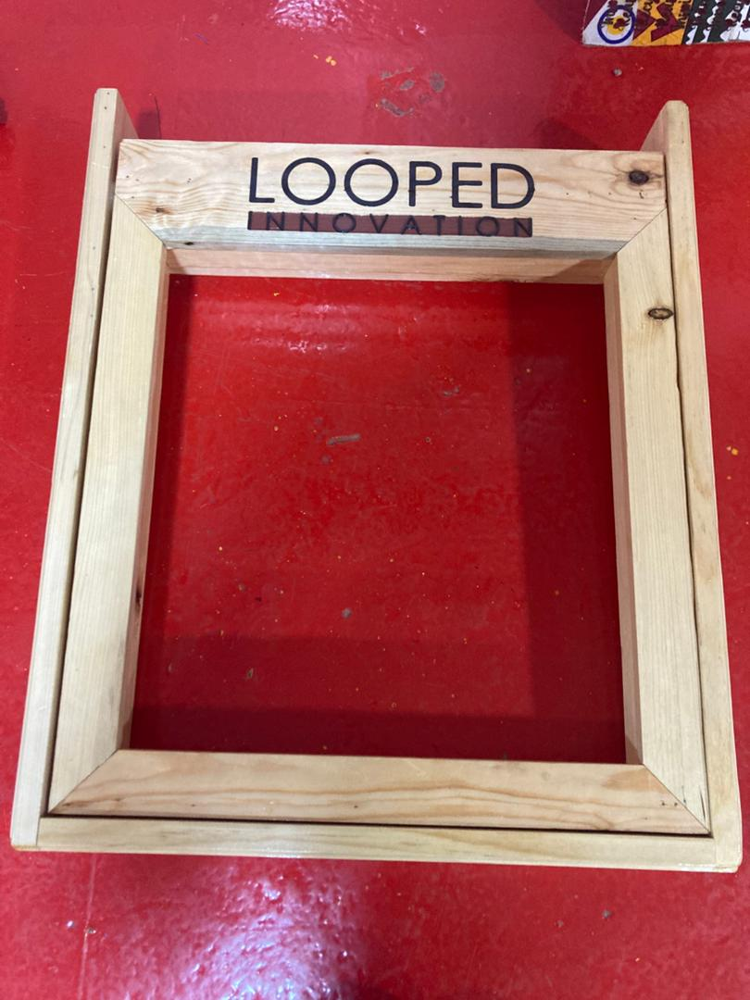
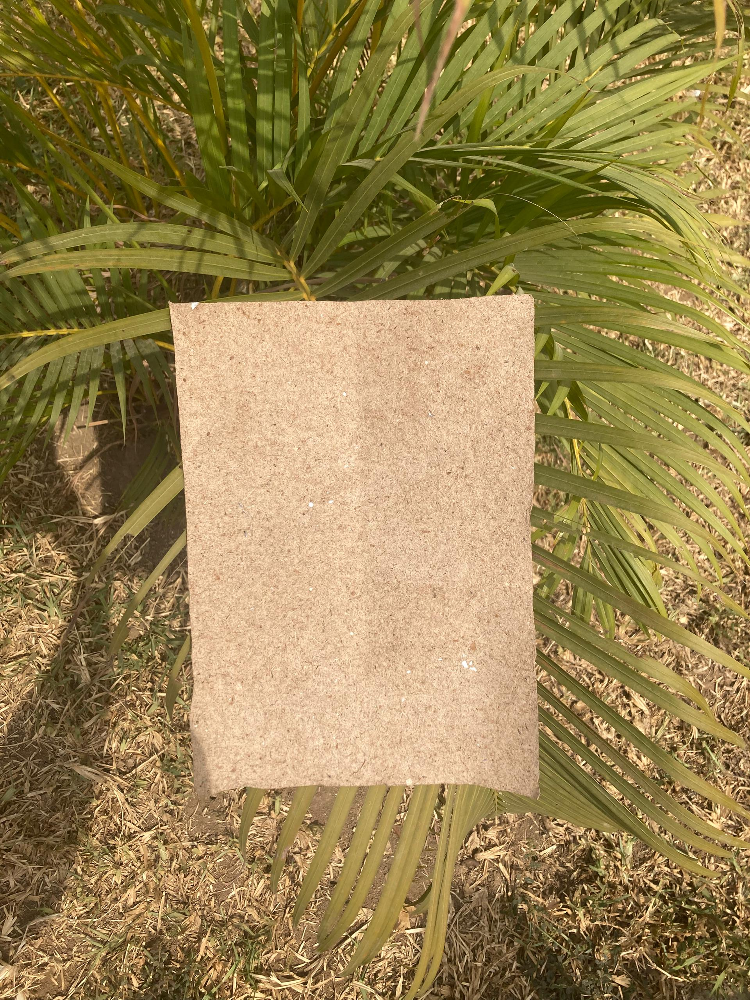
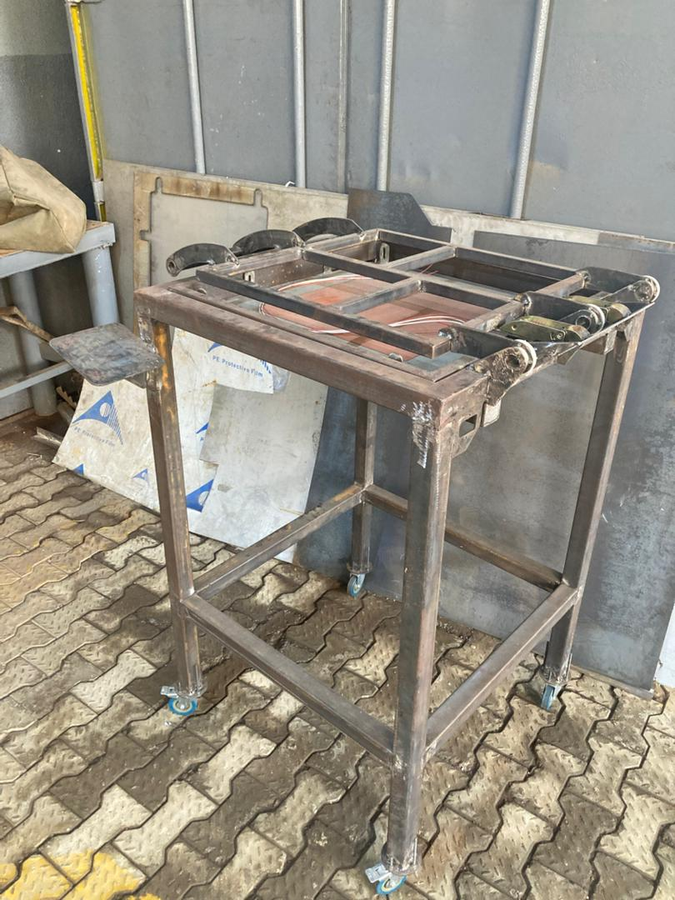
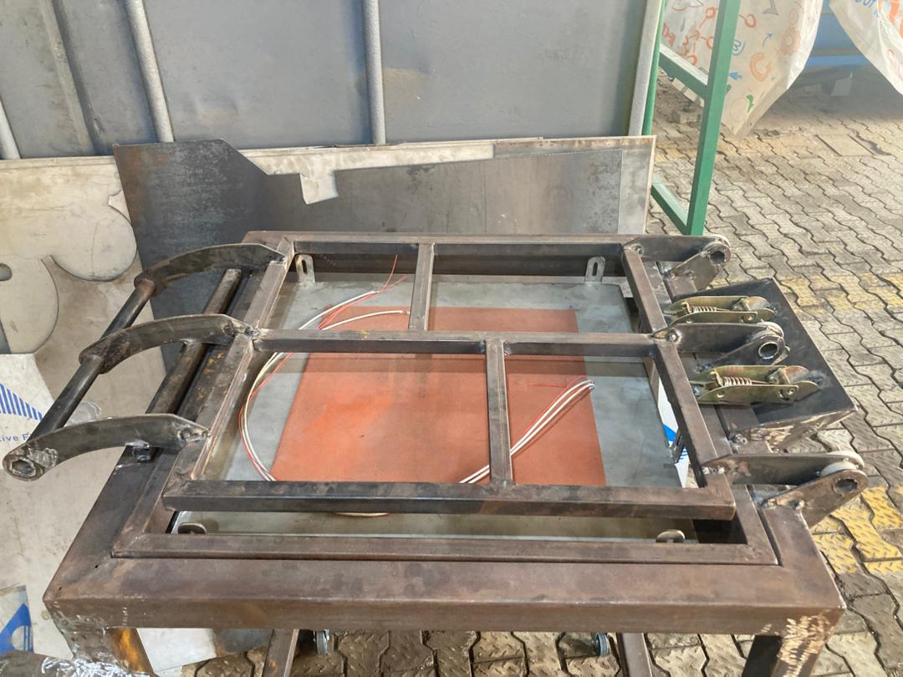
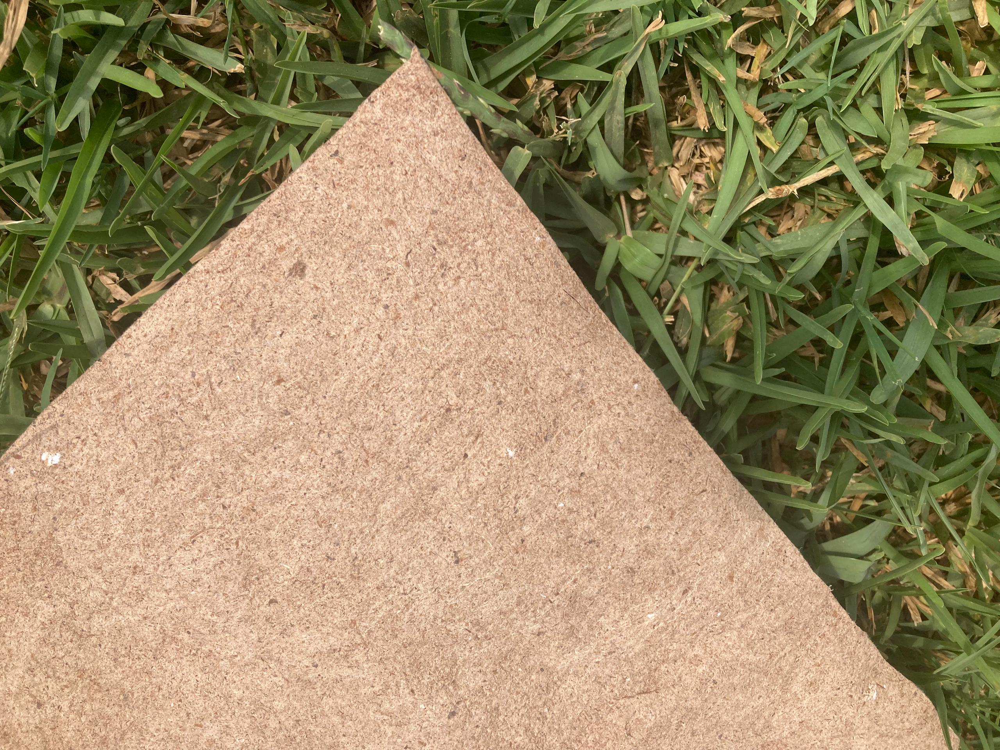

The Process & Equipment
From Agricultural Waste to Packaging.
Every NaturePacks product begins in the field and is engineered in our fabrication workshop — custom-built machinery, real fiber, real paper.
Step 01 — Raw Material Collection
Sourcing from the plantation.
We collect banana and plantain fiber residues directly from local agricultural communities — the same stems and leaves that would otherwise be discarded as waste.
- Banana and plantain stems — high cellulose fiber content
- Dried stem husks — processed for fiber extraction
- Sourced from farms within local supply chain
- Zero deforestation — purely agricultural residue


Step 02 — Pulping & Fiber Preparation
Breaking down fibers into pulp.
The dried stems are submerged and processed in our custom-fabricated metal basin — a heavy-duty pulping vat designed specifically for breaking down agricultural fibers into workable paper pulp.
- Custom welded steel basin chassis — designed in-house
- Water-based pulping breaks down cellular fiber structure
- Blending stage homogenizes fiber concentration
- Pulp consistency controlled for sheet quality

Step 03 — Sheet Formation
The deckle and mould.
Pulp is poured over our branded Looped Innovation deckle — a hand-crafted wooden mould and deckle frame with a fine mesh screen that captures the fiber evenly, forming raw paper sheets.
- Wooden mould and deckle — Looped Innovation branded
- Fine mesh screen captures uniform fiber layer
- Sheet thickness controlled by pulp volume
- Natural drainage removes excess water


Step 04 — Pressing & Drying
Turning wet sheets into durable paper.
Wet sheets are transferred to our custom-designed heated drying mechanism — a prototype chassis engineered with heating elements and clamp mechanisms to press and cure the paper to the required strength and thickness specification.
- Prototype heated drying chassis — custom engineered
- Integrated heating elements for uniform curing
- Clamp mechanisms apply controlled pressure
- Mobile chassis on caster wheels for workshop flexibility


Step 05 — Output
NaturePacks paper — tested and ready.
The result is a uniform, durable natural fiber sheet — the raw material for all NaturePacks products. Each test batch confirms strength, texture, and consistency before going into product conversion.
- Uniform texture with visible natural fiber pattern
- Moisture-resistant after curing
- Cut and converted into bags, boxes, and sheets
- Custom branded printing on finished products

Equipment Being Designed
Custom-Built. Designed In-House.
Every piece of equipment in the NaturePacks production line is being custom-fabricated specifically for processing banana and plantain agricultural fibers into packaging-grade paper.
Pulping Basin Chassis
Heavy-gauge welded steel vat mounted on a structural chassis. Designed to hold fiber slurry for the pulping and blending stage of production.
In FabricationHeated Drying Mechanism
A prototype press-and-dry chassis with integrated heating elements, clamp locking mechanisms, and mobile caster wheels. Engineered for uniform sheet curing.
Prototype StageMould & Deckle Frame
Branded wooden mould and deckle for manual sheet formation. Mesh screen surface captures fiber uniformly during the sheet-forming stage.
OperationalIn Action
Watch the process.
Sheet Formation
Fiber pulp being formed into raw paper sheets using the mould and deckle.
Drying Mechanism Behaviour
Demonstrating the clamp and press system of the prototype drying chassis.
The Deckle
The Looped Innovation branded mould and deckle frame in use during sheet forming.
Ready to order sustainable packaging?
Visit our website or get in touch directly.